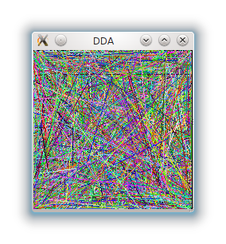

Infinite Loop Question
I want to achieve the effect as shown the picture:

I am generating this by including an infinite loop inside the glutDisplayFunct
callback function, and which is not good as i cannot then process any
input from the keyboard. The other method of which i can think is to
probably use the glut's explicit window refresh functions.
I want to know how can i insert an infinite loop and also check for keyboard input. Here is the sample code i have made. It simply implements the DDA algorithm and attempts to draw infinite lines by generating random coordinates and colours.
#include <stdio.h>
#include <GL/glut.h>
int width;
int height;
void dda (int x1, int y1, int x2, int y2)
{
int del_x, del_y, sample_steps, i = 1;
double x_incr, y_incr, x, y;
del_x = x2 - x1;
del_y = y2 - y1;
sample_steps = (abs (del_x) > abs (del_y)) ? abs (del_x) : abs (del_y);
x_incr = del_x / (double) sample_steps;
y_incr = del_y / (double) sample_steps;
x = x1;
y = y1;
glBegin (GL_POINTS);
while (i<=sample_steps)
{
glVertex2f ((2.0 * x)/width, (2.0 * y)/height);
x += x_incr;
y += y_incr;
i++;
}
glEnd ();
glFlush ();
}
void keypress_handler (unsigned char key, int x, int y)
{
if (key == 'q' || key == 'Q')
{
glutLeaveMainLoop ();
}
}
void init_screen (void)
{
glMatrixMode (GL_PROJECTION);
glClearColor (0, 0, 0, 1);
glClear (GL_COLOR_BUFFER_BIT);
glLoadIdentity ();
glMatrixMode (GL_MODELVIEW);
}
void test_dda (void)
{
int x1, y1, x2, y2;
float r, g, b;
int i=1;
glClear (GL_COLOR_BUFFER_BIT);
srand (time(NULL));
width = glutGet (GLUT_WINDOW_WIDTH);
height = glutGet (GLUT_WINDOW_HEIGHT);
while (i)
{
x1 = rand () % width - (width /2); /* Global */
y1 = rand () % height - (height /2); /* Global */
x2 = rand () % width - (width /2); /* Global */
y2 = rand () % height - (height /2); /* Global */
r = rand () / (float) RAND_MAX;
g = rand () / (float) RAND_MAX;
b = rand () / (float) RAND_MAX;
glColor3f (r, g, b);
dda (x1, y1, x2, y2);
printf ("\r%d", i);
i++;
}
}
void reshape (int w, int h)
{
glViewport (0, 0, w, h);
glMatrixMode (GL_PROJECTION);
glLoadIdentity ();
gluOrtho2D (-1, 1, -1, 1);
glMatrixMode (GL_MODELVIEW);
}
int main (int argc, char *argv[])
{
glutInit (&argc, argv);
glutInitDisplayMode (GLUT_SINGLE | GLUT_RGB);
init_screen ();
glutCreateWindow ("DDA");
glutDisplayFunc (test_dda);
glutReshapeFunc (reshape);
glutKeyboardFunc (keypress_handler);
glutMainLoop ();
printf ("\n");
return 0;
}Broken lines when first drawn
Also i have an additional question, which is like this:
When i uncomment the infinite loop (the while (i)) inside the test_dda
function and run the executable with 1280x960 screen size every line
drawn shows as broken lines, they seems look something like dashed
lines. But, if i do not infinitely loop in this function and draw the
lines with some other way, like forcing OpenGL to redraw, the lines
shows as they should be displayed. I have noticed that when drawing the
first time, the lines show broken. The broke lines of which i am
talking is shown below:
To understand what i am saying do the following to get the effect. Change the while (i) to while (i<1000)
. This will draw 1000 lines on the screen. When i run with this change
with 1280x960 window size, the window is drawn 2 times. The first time
the lines are drawn shows as broken as the above image. The moment 1000
lines are drawn, the window is cleared again the it is drawn again, but
this time the lines shows as they should be. Why this is happening.